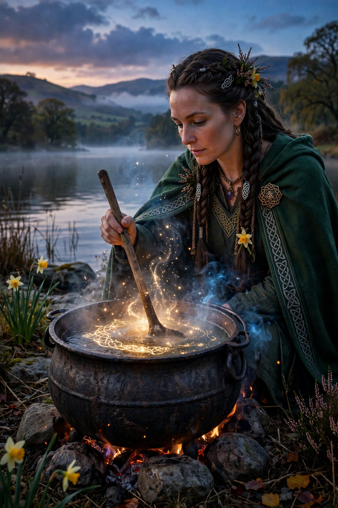

Ceridwen
Ceridwen (also spelled Cerridwen or Keridwen) is a powerful enchantress in Welsh mythology, keeper of the cauldron of Awen — poetic inspiration and knowledge — and the mother of the great bard Taliesin. In the late medieval tale Hanes Taliesin ("The Tale of Taliesin"), she brews a potion of wisdom intended for her ill-favoured son Afagddu, but the brew's virtues are stolen by her servant boy Gwion Bach.

| Abode | Llyn Tegid (Bala Lake), Gwynedd |
|---|---|
| Consort | Tegid Foel |
| Children | Morfran (Afagddu), Crearwy; Taliesin (reborn) |
| Attribute | Cauldron of Awen |
| Sources | Hanes Taliesin; Book of Taliesin poems |
The cauldron of inspiration
Ceridwen, who lives at Llyn Tegid in Penllyn with her husband Tegid Foel, resolves to compensate her ugly son Afagddu ("Utter Darkness") for his looks by giving him the gift of wisdom and prophecy. Following the books of the astronomers, she boils a cauldron of inspiration for a year and a day, gathering herbs at their proper hours. Three drops of the finished potion will confer all knowledge; the rest is deadly poison. She sets the boy Gwion Bach to stir the pot and a blind man, Morda, to keep the fire.
The chase and the birth of Taliesin
Three scalding drops splash onto Gwion's thumb; he sucks it and instantly gains wisdom, foreseeing Ceridwen's wrath. He flees, and a famous shape-shifting pursuit follows: he becomes a hare, she a greyhound; a fish, she an otter; a bird, she a hawk; a grain of wheat, she a black hen, who swallows him. Nine months later she gives birth to the child she cannot bring herself to kill for his beauty; she sews him into a leather bag and casts him into the sea. The bag washes ashore at Aberdyfi, where it is found by Elffin ap Gwyddno, who names the radiant infant Taliesin ("Radiant Brow").
Interpretation
Victorian and later writers often elevated Ceridwen into a Celtic goddess — of rebirth, inspiration, and the grain — though the medieval evidence presents her as a witch or enchantress rather than an object of cult. She remains a popular figure in modern paganism and Welsh cultural memory, and her cauldron is a lasting symbol of poetic inspiration (awen).
See also
References
- Ford, Patrick K. (trans.), The Mabinogi and Other Medieval Welsh Tales, 1977.
- MacKillop, James, Dictionary of Celtic Mythology, Oxford University Press, 1998.